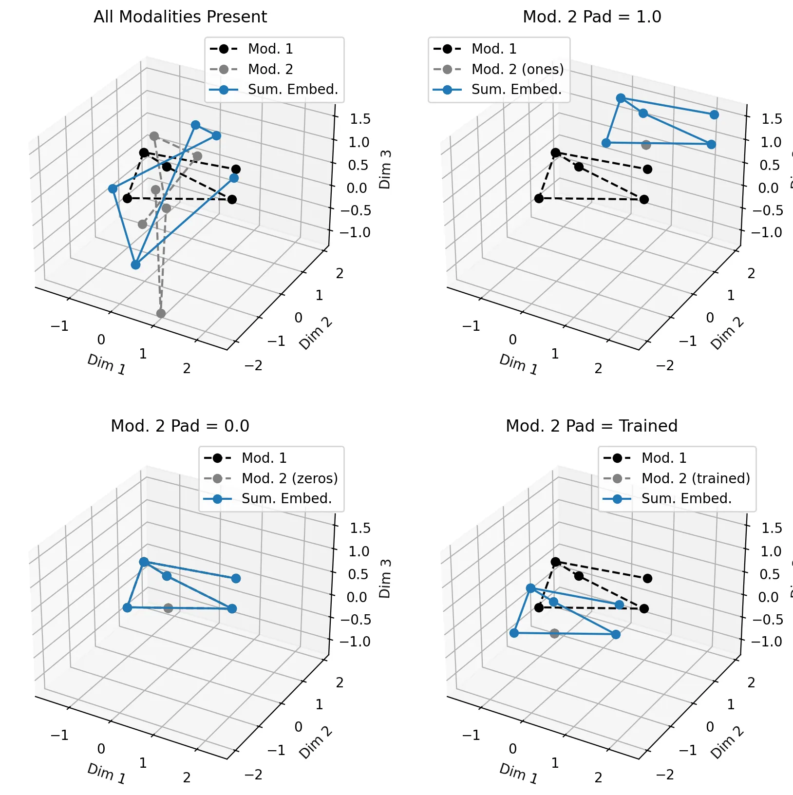

Eric J Ma's Website
written by Eric J. Ma on 2024-08-25 | tags: esm3 neural network multi-modality model training data tokenization model architecture vector embedding machine learning protein modeling journal club
In this blog post, I explore the ESM3 model, focusing on its handling of missing modalities in multi-modality training. I dissect the model's architecture, input and output configurations, and the strategic use of default values for absent data. By examining the source code and conducting a toy example, I illustrate how embeddings are calculated and how they shift in vector space when modalities are missing. This deep dive reveals the model's elegant design and its potential for multi-modality integration. Has this piqued your curiosity yet?
I recently read the ESM3 paper. Setting aside the more marketing-oriented title ("Simulating 500 million years of evolution..."), I was genuinely curious to see how this multi-modality model was trained. Previously, when writing about multi-modality models, the one thing that baffled me was this problem: How do we handle the situation where some of our modalities are missing from a training set sample?
ESM3 was the first model in which I observed how accommodating missing modalities worked. Here are my notes after digging into the model's source code.
Model Inputs and Outputs
Firstly, we start with what the neural network model takes as inputs and returns as outputs. We will also study the tokenization scheme of the ESM3 model, which is crucial for understanding the inputs to ESM.
| Argument | Embedding | Semantics | Default Value |
|---|---|---|---|
sequence_tokens |
✅ | tokenized sequence | sequence.mask_token_id |
structure_tokens |
✅ | tokenized 3D structure | STRUCTURE_MASK_TOKEN |
average_plddt |
✅ | average of predicted LDDT (i.e. model confidence) across the structure | 1.0 |
per_res_plddt |
✅ | per-residue pLDDT | 0.0 |
ss8_tokens |
✅ |
secondary structure tokens | SS8_PAD_TOKEN |
sasa_tokens |
✅ |
solvent accessible surface area (SASA) tokens | SASA_PAD_TOKEN |
function_tokens |
✅ |
function tokens | INTERPRO_PAD_TOKEN |
residue_annotation_tokens |
✅ |
residue annotation tokens | RESIDUE_PAD_TOKEN |
structure_coords |
❌ | structure 3D coordinates | nan |
chain_id |
❌ | chain ID, usually "A", "B", or some other name | 0 |
sequence_id |
❌ | sequence ID | None |
Crucially, the model ESM3 only requires one of the inputs to be passed in. We can know this by studying the forward pass of the model. For the arguments not provided, each has default values, as described in the table above. These are set per batch of sequence that is passed in.
The outputs of the ESM3 model are as follows, with the following shapes:
| Output | Dimensions | Dimension Semantics |
|---|---|---|
embeddings |
(batch, seq_length, d_model) |
d_model is set by humans. |
function_logits |
(batch, seq_length, 8, 260) |
"8" refers to lsh_bits_per_token, 260 is the function token vocabulary size after using TF-IDF. |
sasa_logits |
(batch, seq_length, 19) |
15 boundaries imply 16 levels, + 3 tokens for pad, motif, and unk (unknown) |
sequence_logits |
(batch, seq_length, 64) |
20 standard a.a. + XBUZO + .-| + <cls>, <pad>, <eos>, <bos>, <mask>. Not sure how we get to 64; I suspect it's in preparation for a codon model, or just extra capacity. |
structure_logits |
(batch, seq_length, 4096) |
4096 is the dimension of the VQ-VAE that's used to embed structure. |
secondary_structure_logits |
(batch, seq_length, 11) |
8-class vocabulary for secondary structure + 3 special tokens <pad>, <motif>, and <unk>. |
I'm noticing that the Evolutionary Scale folks have chosen to discretize properties considered continuous, such as SASA. Though this choice is arbitrary, it fits the language modelling paradigm. Presumably, one may choose a smaller number of discrete levels while trading off granularity.
Model Architecture
At a high level, the model's architecture looks roughly (but not exactly!) like the following, with the relevant attributes assumed to be set up in the __init__():
class ESM3(nn.Module): def forward(self, *tokenized_inputs): tokenized_inputs = _set_defaults(*tokenized_inputs) embeddings = self.encoder(*tokenized_inputs) transformed_embeddings, embeddings = self.transformer_stack(encoded, **other_information) return self.output_heads(transformed_embeddings, embeddings) # embeddings is passed through to the output
Most crucially, we need to examine what conceptually happens within self.encoder on a per-sample basis:
class ESMEncoder(nn.Module): def forward(tokenized_inputs: dict): embedded_inputs = [] for name, tokenized_input in tokenized_inputs.items(): embedded_input = self.embedder[name](tokenized_input) embedded_inputs.append(embedded_input) return torch.stack(embedded_inputs, dim=0).sum(dim=0)
As you can see, we sum the embedding vectors together. I had quite a few questions about this, and I will address them later.
Dealing with missing modalities
So, we now come to the key question of this post: how does the model deal with missing modalities?
The "Default Value" column above gives us the answer: if we are missing a data modality, then we use a default value to fill it in! Looking at the table above, any modality involved in calculating the embedding uses a default value, such as the respective pad token, mask token, or a semantically relevant floating point value. Thinking back to a conversation I had with colleagues at work, this was also an idea we thought of implementing, but we weren't 100% sure whether this would so-called 'work' or not.
Now, from studying the model source code, we know that there are 8 modalities that are used for calculating the final embedding. When a modality is missing, we use a sentinel value as a default value. What effect will this have on the learned embedding layers, and what effect will this have on the model's encoder's outputs?
To understand this, we need to remember two facts. Firstly, addition in vector space represents a location shift. Secondly, tokenization effectively indexes into a trainable vector representation of text.
Let's see how these two play together by exploring a minimally complex toy example. We will begin with the following setup:
- Two modalities:
- String letters with alphabet
ABCDE* - String numbers with alphabet
12345* *in both cases represents thepadtoken.
- String letters with alphabet
- Sequence of length 7.
- Modality 1's sequence is:
EECADEB - Modality 2's sequence is:
2151322 - Modality 2 is the one we will choose to be optionally missing, and when missing, will be represented by the following string:
*******
- Modality 1's sequence is:
- Embeddings are 3-dimensional. For simplicity's sake, we will draw them from an isotropic Gaussian distribution, except for the pad character, which falls into three cases:
- In the base case, we will use an isotropic Gaussian
- In one extreme case, we will set it to be all ones:
np.array([1.0, 1.0, 1.0]) - In another extreme case, we will set it to be zeros:
np.array([0.0, 0.0, 0.0])
import numpy as np dim_size = 3 # Create embedding for modality 1 rng = np.random.default_rng(seed=44) alphabet1 = list("ABCDE*") trainable_embeddings1 = rng.normal(size=(len(alphabet1), dim_size)) tokenization1 = [alphabet1.index(letter) for letter in "EECADEB"] sequence_embedding1 = np.vstack([trainable_embeddings1[i] for i in tokenization1]) # shape: (len(sequence), dim_size) # Create embedding for modality 2 rng2 = np.random.default_rng(seed=42) alphabet2 = list("12345*") trainable_embeddings2 = rng2.normal(size=(len(alphabet2), dim_size)) tokenization2 = [alphabet2.index(number) for number in "2214523"] sequence_embedding2 = np.vstack([trainable_embeddings2[i] for i in tokenization2]) # shape: (len(sequence), dim_size) # For the three ways of exploring what happens when we are missing sequence 2 tokenization2_missing = [alphabet2.index(number) for number in "*******"] sequence_embedding2_missing = np.vstack([trainable_embeddings2[i] for i in tokenization2_missing]) # shape: (len(sequence), dim_size) sequence_embedding2_ones = np.ones_like(sequence_embedding2_missing) # shape: (len(sequence), dim_size) sequence_embedding2_zeros = np.zeros_like(sequence_embedding2_missing) # shape: (len(sequence), dim_size) # Now we create the summed embeddings for each of the four cases summed_embedding = sequence_embedding1 + sequence_embedding2 ## NOTE: for the following three cases, modality 2 is missing! summed_embedding_ones = sequence_embedding1 + sequence_embedding2_ones summed_embedding_zeros = sequence_embedding1 + sequence_embedding2_zeros summed_embedding_missing2 = sequence_embedding1 + sequence_embedding2_missing
Let's view what happens when we visualize all four cases (modality 2 not missing + three representation variation when modality 2 is missing):
fig = plt.figure(figsize=(10, 10)) # Plot embeddings when no modality is missing ax_no_missing = fig.add_subplot(221, projection="3d") ax_no_missing.plot(sequence_embedding1[:, 0], sequence_embedding1[:, 1], sequence_embedding1[:, 2], marker="o", label="Mod. 1", ls="--", color="black") ax_no_missing.plot(trainable_embeddings2[:, 0], trainable_embeddings2[:, 1], trainable_embeddings2[:, 2], marker="o", label="Mod. 2", ls="--", color="gray") ax_no_missing.plot(summed_embedding[:, 0], summed_embedding[:, 1], summed_embedding[:, 2], marker="o", label="Sum. Embed.") ax_no_missing.legend() ax_no_missing.set_title("All Modalities Present") # Plot embeddings when modality 2 is missing and is represented by a vector of ones. ax_missing_ones = fig.add_subplot(222, projection="3d") ax_missing_ones.plot(sequence_embedding1[:, 0], sequence_embedding1[:, 1], sequence_embedding1[:, 2], marker="o", label="Mod. 1", ls="--", color="black") ax_missing_ones.plot(sequence_embedding2_ones[:, 0], sequence_embedding2_ones[:, 1], sequence_embedding2_ones[:, 2], marker="o", label="Mod. 2 (ones)", ls="--", color="gray") ax_missing_ones.plot(summed_embedding_ones[:, 0], summed_embedding_ones[:, 1], summed_embedding_ones[:, 2], marker="o", label="Sum. Embed.") ax_missing_ones.legend() ax_missing_ones.set_title("Mod. 2 Pad = 1.0") # Plot embeddings when modality 2 is missing and represented with a vector of zeros. ax_missing_zero = fig.add_subplot(223, projection="3d") ax_missing_zero.plot(sequence_embedding1[:, 0], sequence_embedding1[:, 1], sequence_embedding1[:, 2], marker="o", label="Mod. 1", ls="--", color="black") ax_missing_zero.plot(sequence_embedding2_zeros[:, 0], sequence_embedding2_zeros[:, 1], sequence_embedding2_zeros[:, 2], marker="o", label="Mod. 2 (zeros)", ls="--", color="gray") ax_missing_zero.plot(summed_embedding_zeros[:, 0], summed_embedding_zeros[:, 1], summed_embedding_zeros[:, 2], marker="o", label="Sum. Embed.") ax_missing_zero.legend() ax_missing_zero.set_title("Mod. 2 Pad = 0.0") # Plot embeddings when modality 2 is missing and represented with trainable embeddings. ax_missing_trainable = fig.add_subplot(224, projection="3d") ax_missing_trainable.plot(sequence_embedding1[:, 0], sequence_embedding1[:, 1], sequence_embedding1[:, 2], marker="o", label="Mod. 1", ls="--", color="black") ax_missing_trainable.plot(sequence_embedding2_missing[:, 0], sequence_embedding2_missing[:, 1], sequence_embedding2_missing[:, 2], marker="o", label="Mod. 2 (trained)", ls="--", color="gray") ax_missing_trainable.plot(summed_embedding_missing2[:, 0], summed_embedding_missing2[:, 1], summed_embedding_missing2[:, 2], marker="o", label="Sum. Embed.") ax_missing_trainable.legend() ax_missing_trainable.set_title("Mod. 2 Pad = Trained") # Set all axes to the same scale xaxes_vals = [] yaxes_vals = [] zaxes_vals = [] for ax in fig.axes: x_vals = ax.get_xlim3d() y_vals = ax.get_ylim3d() z_vals = ax.get_zlim3d() xaxes_vals.extend(x_vals) yaxes_vals.extend(y_vals) zaxes_vals.extend(z_vals) # Set all of the x/y/z labels. for ax in fig.axes: ax.set_xlabel("Dim 1") ax.set_ylabel("Dim 2") ax.set_zlabel("Dim 3") ax.set_xlim3d(min(xaxes_vals), max(xaxes_vals)) ax.set_ylim3d(min(yaxes_vals), max(yaxes_vals)) ax.set_zlim3d(min(zaxes_vals), max(zaxes_vals))

To interpret the figure above, let's zoom in on the bottom-left (which is easiest to look at because the points are overlaid on top of one another). What we've done here is plot the sequence's 3D embedding position-by-position. Because there are repeated tokens within the sequence, we thus have repeated 3D embeddings in our sequence and revisit some of the 3D coordinates. This is also a graph where nodes are the embedding positions, and edges denote positionally adjacent embedding positions based on the original sequence.
To help with visualization, I also made a Manim (math animation), with a little help from ChatGPT, which first shows modality 1 and then shows the result of adding modality 2's embedding to modality 1.
As shown in the figure and animation above, using a default token shifts the first modality's embeddings off by a constant amount in vector embedding space or by zero if we look at the bottom-left subplot, where we set the pad embedding to have a zero value. By contrast, if we look at the top-left corner where we have modality 2 present, we see the summed embeddings effectively being a distorted version of modality 1 when modality 2's embeddings are summed with modality 1's.
I did this deep dive to give us a geometric intuition of what's happening in vector space from a geometric perspective. Crucially, I've been using random numbers above, but in reality, the n-dimensional coordinates representing each token are trainable parameters that will be adjusted according to the training data. This is how, in protein or codon language models, we observe similar amino acids clustering with one another. But what does this mean semantically? I'm not 100% sure as we are operating in token-level embedding space here, but at the risk of anthropomorphizing the model, the simplest explanation I can think of is as follows. The relative geometry of the points in the embedding space preserves information about the underlying sequence. So, even if points are shifted off, there is sufficient information for the decoder to guess what the missing values might be, especially when trained on millions of examples. Thanks to the attention mechanism, the most important relationship between positions -- in some ways, this is the topology of the sequence -- can be modelled in a data-driven fashion.
Model architecture reprise
Let's revisit the ESM model architecture once again. It looks like this:
Each modality is in red, green, or blue (apologies for the colour-blind; I am using Excalidraw's default colours). Modalities are masked to different degrees, represented by cross-hatched positions (you may need to zoom into the figure to see them). Summation happens after we calculate the per-modality embeddings for each sample, giving us an array of shape (sequence_length, model_dimension) per sample. It is passed through the Transformer block before decoding, where the decoder is nothing more than a feed-forward neural network that is applied to each position independently.
Viewed from a causal perspective, each output can be interpreted as causally related to each input. Whether this makes biological sense or not is a different matter. We have effectively created a hypergraph between the modalities -- all modalities are connected to all other modalities, but their edges are tied together in the summed embedding space. The nature of the model's training, where we mask and reconstruct the inputs, allows us to pass in placeholders of entire sequences and attempt to rebuild them from the information in other modalities.
My thoughts
After dissecting the model architecture, I realized it's pretty elegant. Though the model has varying capacities, the overall architecture remains the same:
- embed,
- sum,
- transformer block, and
- decode.
All-to-all embeddings open the door for multi-modality integration -- a term that I thought was a buzzword in the early days of multi-modality neural network models. However, I can now see the potential. Retrieval-augmented generation (RAG) showed us the utility of embedding data in vector space and using them to generate new content. When paired with a model explicitly trained to be multi-modality, we can use it to create a missing modality conditioned on other modalities' values.
Cite this blog post:
@article{
ericmjl-2024-dissecting-the-esm3-model-architecture,
author = {Eric J. Ma},
title = {Dissecting the ESM3 Model Architecture},
year = {2024},
month = {08},
day = {25},
howpublished = {\url{https://ericmjl.github.io}},
journal = {Eric J. Ma's Blog},
url = {https://ericmjl.github.io/blog/2024/8/25/dissecting-the-esm3-model-architecture},
}
I send out a newsletter with tips and tools for data scientists. Come check it out at Substack.
If you would like to sponsor the coffee that goes into making my posts, please consider GitHub Sponsors!
Finally, I do free 30-minute GenAI strategy calls for teams that are looking to leverage GenAI for maximum impact. Consider booking a call on Calendly if you're interested!